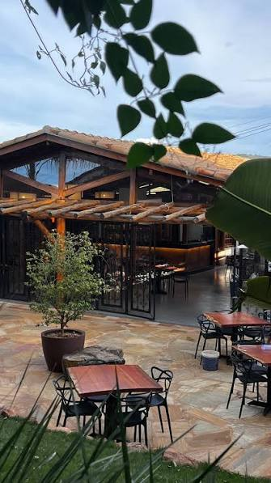

Cozinha autoral
Pratos feitos para acompanhar a noite e dividir bons momentos à mesa.
Três Pontas · Minas Gerais
Um jardim para desacelerar, brindar e aproveitar a noite com boa comida e companhia.
A partir das 18h · Consulte a equipe sobre reservas

Um convite para ficar
Entre a luz das árvores e a conversa que se estende, o Jardins reúne cozinha autoral, carta de bebidas e um ambiente pensado para aproveitar sem pressa.
Venha a dois, com amigos ou em família. Para grupos e reservas, fale diretamente com a equipe antes de sair.
Conheça o Jardins no InstagramPor aqui
Um pouco do espaço que faz cada encontro durar mais.
Fotos públicas do perfil oficial @jardinsgastro.
A experiência Jardins
Escolha seu ritmo: um jantar tranquilo, uma noite entre amigos ou só mais um drink antes de ir.
Pratos feitos para acompanhar a noite e dividir bons momentos à mesa.
Cervejas, vinhos e bebidas para encontrar o seu jeito de brindar.
Ambiente acolhedor para encontros, grupos e visitas sem ocasião especial.
Quem já veio
“Ambiente extremamente aconchegante. Comida boa, bebida gelada. Recomendo.”Michel Pereira Paulo · Google
“Ambiente muito agradável, comida impecável, atendimento maravilhoso.”Giovana Zanateli · Google
“Experiência diferenciada! Lugar lindo e aconchegante, comida boa e música super agradável.”Maria Ester Aparecida Juvencio · Google
A gente te espera
A partir das 18h · Confirme os horários do dia